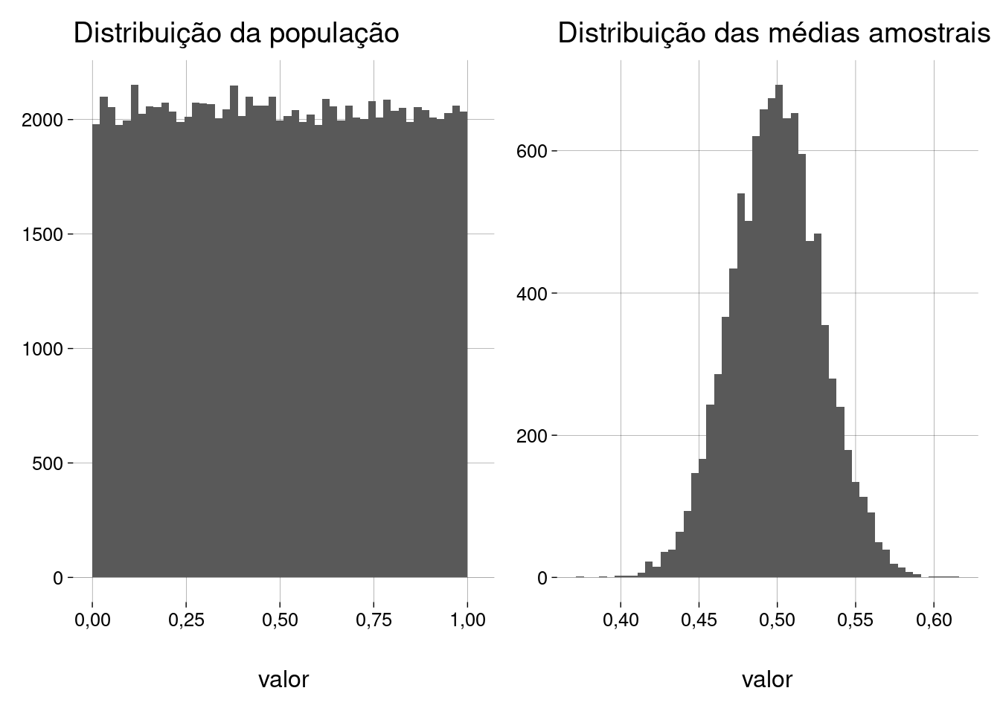
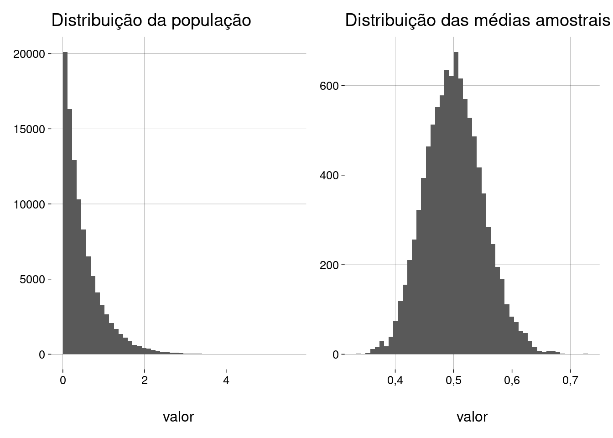
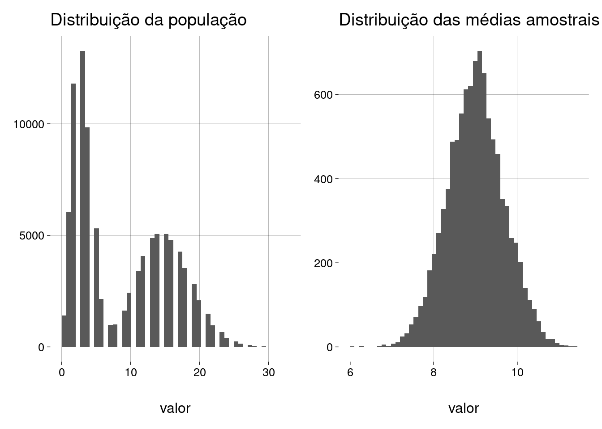
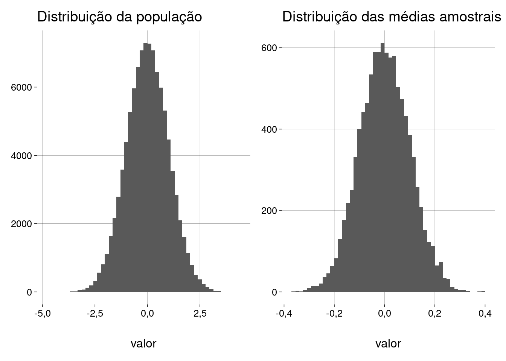
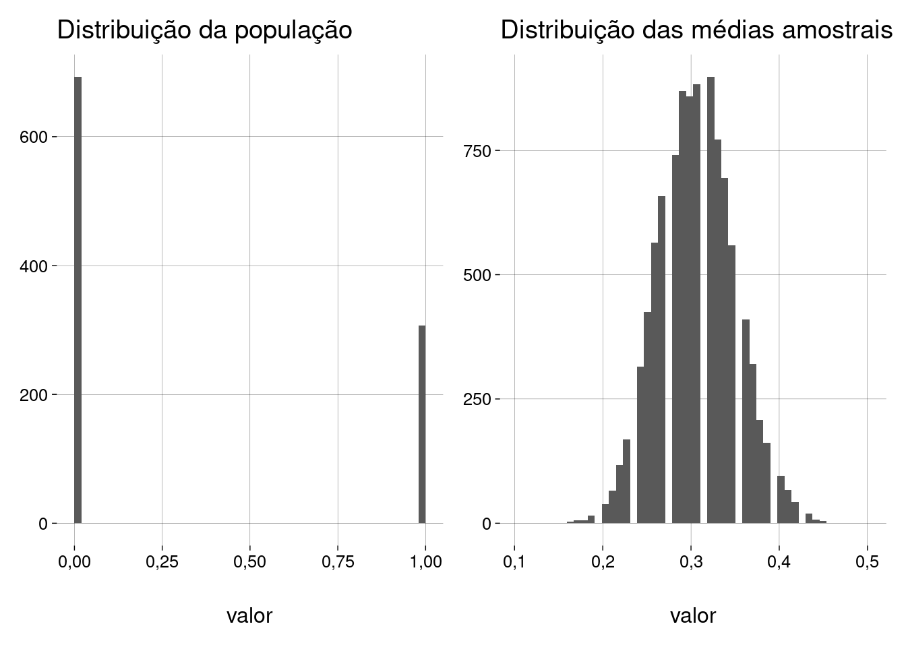

Capítulo 11 Teorema central do limite
11.2 Objetivo
Neste capítulo, vamos pensar em todas as amostras possíveis de tamanho \(n\) que podem ser retiradas de uma população.
Se calcularmos a média de cada uma das amostras, teremos um vetor de médias amostrais.
-
Podemos nos perguntar sobre a distribuição destas médias amostrais:
- Qual é a forma desta distribuição?
- Qual é a média desta distribuição?
- Qual é o desvio-padrão desta distribuição?
Em um experimento, quando coletamos uma amostra de uma população e calculamos a sua média, estamos escolhendo, aleatoriamente, um elemento desta distribuição de médias amostrais.
Podemos considerar a média amostral como uma variável aleatória, cuja distribuição é a distribuição de todas as médias amostrais possíveis.
11.3 Populações não-normais
11.3.1 Uniforme
Vamos começar com um exemplo.
-
Imagine que temos uma população cujos valores (entre \(0\) e \(1\)) obedecem a uma distribuição uniforme.
tamanho_populacao <- 1e5 uniforme <- runif(tamanho_populacao) -
Vamos retirar amostras (de tamanho \(n\) fixo) desta população e calcular a média de cada amostra.
tamanho_amostra <- 100 -
Por exemplo, três amostras e suas respectivas médias:
a1 <- sample(uniforme, tamanho_amostra) a1## [1] 0,869329581 0,209982300 0,496638928 0,499368979 0,186657457 0,344342385 ## [7] 0,116801439 0,189941214 0,772423104 0,778783751 0,093156450 0,047591340 ## [13] 0,899949302 0,226315399 0,552560914 0,525825123 0,029640391 0,561917409 ## [19] 0,559809882 0,859597950 0,804871507 0,146827935 0,058951598 0,280102798 ## [25] 0,285028522 0,519327860 0,433106976 0,333304451 0,476584831 0,954638124 ## [31] 0,780591801 0,101339978 0,314654316 0,990242735 0,844954866 0,967392699 ## [37] 0,405311205 0,171424852 0,213557780 0,055929760 0,622402403 0,135257883 ## [43] 0,290075190 0,202630254 0,594905346 0,901837959 0,236021807 0,759908866 ## [49] 0,113728049 0,299836375 0,761246537 0,939895977 0,143753349 0,440195605 ## [55] 0,819540306 0,645228428 0,774125327 0,687840871 0,914238179 0,447603248 ## [61] 0,193711443 0,703450752 0,631015757 0,495302198 0,729789897 0,950673754 ## [67] 0,571333267 0,932531156 0,021805045 0,393015711 0,560980635 0,593482739 ## [73] 0,435080813 0,404940347 0,863593709 0,845344782 0,248668870 0,745614397 ## [79] 0,500851495 0,714276091 0,571823950 0,664567435 0,483944942 0,451380692 ## [85] 0,974769468 0,182308296 0,618412335 0,784412536 0,429907971 0,524626410 ## [91] 0,839356654 0,009628747 0,982638869 0,460771559 0,447391513 0,701077975 ## [97] 0,419461402 0,022708026 0,071822650 0,268530721mean(a1)## [1] 0,5013405a2 <- sample(uniforme, tamanho_amostra) a2## [1] 0,537127257 0,714157724 0,758129320 0,607783146 0,191654072 0,558148076 ## [7] 0,153129519 0,968886300 0,560464972 0,078813070 0,847052889 0,435220801 ## [13] 0,429718401 0,675571424 0,064212858 0,555145596 0,983912982 0,017477169 ## [19] 0,739916454 0,159267699 0,646231567 0,767586507 0,459140804 0,794855330 ## [25] 0,474957738 0,391580225 0,807984830 0,722808217 0,306649534 0,904464052 ## [31] 0,280691341 0,612927329 0,193282636 0,751671237 0,066252671 0,672371127 ## [37] 0,906193240 0,801269493 0,956015212 0,053552623 0,814222519 0,287908558 ## [43] 0,282878551 0,817179111 0,913337606 0,688490601 0,023302804 0,801148736 ## [49] 0,920262174 0,384750240 0,562533689 0,627294533 0,890178173 0,002385939 ## [55] 0,959085852 0,881101963 0,070349924 0,324673084 0,567032631 0,483372909 ## [61] 0,779220516 0,059368621 0,608695943 0,664166924 0,870103676 0,590112060 ## [67] 0,815081495 0,359841079 0,455165238 0,727277773 0,940016040 0,687818256 ## [73] 0,521265980 0,804189556 0,699634301 0,712968478 0,941152321 0,136708336 ## [79] 0,891254095 0,377979213 0,835787549 0,257772818 0,895569389 0,506121808 ## [85] 0,633335854 0,540881501 0,690710838 0,014458583 0,677491209 0,612267448 ## [91] 0,941688599 0,347645721 0,032504889 0,003996033 0,697600042 0,229145339 ## [97] 0,873270965 0,310203195 0,757048784 0,455766988mean(a2)## [1] 0,5586305a3 <- sample(uniforme, tamanho_amostra) a3## [1] 0,37304029 0,60533056 0,67742812 0,78079738 0,16619780 0,80176380 0,84082814 ## [8] 0,75545430 0,34654105 0,66697578 0,87747161 0,56437873 0,22576855 0,52757542 ## [15] 0,15433794 0,07798435 0,03805315 0,84833770 0,68201463 0,88777552 0,05874217 ## [22] 0,53917469 0,06612466 0,52500553 0,82302671 0,30956999 0,99802753 0,48249254 ## [29] 0,16667167 0,71622572 0,77946385 0,15810985 0,96864575 0,85040020 0,94900362 ## [36] 0,95843226 0,04596898 0,52233577 0,55952978 0,75270363 0,71364222 0,49835529 ## [43] 0,50404666 0,10957463 0,14820706 0,90270814 0,12726159 0,93155567 0,02479344 ## [50] 0,21812856 0,50801571 0,57523798 0,93646581 0,56547527 0,25987711 0,95085959 ## [57] 0,05043098 0,46683682 0,51838925 0,06147510 0,19338896 0,99457904 0,76212994 ## [64] 0,67796055 0,36979235 0,86383912 0,64535102 0,92774725 0,63143062 0,80798963 ## [71] 0,48495490 0,46092112 0,22269385 0,34606527 0,83653930 0,85864444 0,31877899 ## [78] 0,24316776 0,76869982 0,47943708 0,63683160 0,57907865 0,29393781 0,39491851 ## [85] 0,36160928 0,03643693 0,38048180 0,43833383 0,31232725 0,81037264 0,43365283 ## [92] 0,54855347 0,25296780 0,06554264 0,33923681 0,90978174 0,54939680 0,36144745 ## [99] 0,05036426 0,55322867mean(a3)## [1] 0,5140166 -
Teremos, então, um conjunto de médias amostrais.
## [1] 0,5013405 0,5586305 0,5140166 -
Qual é a média destas médias amostrais?
mean(medias)## [1] 0,5246626 -
Qual é o desvio-padrão destas médias amostrais?
sd(medias)## [1] 0,03009216 -
Vamos ver as respostas para um exemplo maior: \(10.000\) amostras de \(100\) elementos cada:
## Média da população = 0,499 ## desvio-padrão da população = 0,288 ## ## Quantidade de amostras = 10000 ## Tamanho da amostra = 100 ## ## Média das médias amostrais = 0,499 ## D.P. das médias amostrais = 0,029 A distribuição da população é uniforme, mas a distribuição das médias amostrais parece normal!
A média das médias amostrais é próxima da média populacional.
-
E o desvio-padrão das médias amostrais é função do desvio-padrão da população. Na verdade, este desvio-padrão é
\[ \frac{\sigma}{\sqrt{100}} \]
onde \(\sigma = 0{,}29\) é o desvio-padrão da população, e \(100\) é o tamanho de cada amostra.
Terminologia
A distribuição das médias amostrais (o gráfico à direita no exemplo acima) é chamada de distribuição amostral das médias.
O desvio-padrão da distribuição amostral é chamado de erro-padrão, embora não haja uma idéia clara de erro aqui.
-
A média de todas as médias amostrais é a média populacional. Por incrível que pareça, fica mais fácil entender isto quando escrevemos em matemática:
\[ E(\overline X) = \mu \]
Chamamos \(\overline X\) de um estimador não-tendencioso (unbiased, ou não-enviesado) de \(\mu\).
11.3.2 Exponencial
-
Agora, vamos fazer um exemplo com uma população com distribuição exponencial:
tamanho_populacao <- 1e5 tamanho_amostra <- 100 qtde_amostras <- 1e4 -
Definimos a população com \(\lambda = 2\):
exponencial <- rexp(tamanho_populacao, 2) -
Vamos retirar muitas amostras e examinar os resultados:
## Média da população = 0,5 ## desvio-padrão da população = 0,499 ## ## Quantidade de amostras = 10000 ## Tamanho da amostra = 100 ## ## Média das médias amostrais = 0,501 ## D.P. das médias amostrais = 0,05 De novo, a distribuição das médias amostrais é normal, com média igual à média da população original.
11.3.3 Uma mistura
-
Agora, uma população que é uma mistura de uma binomial com uma Poisson:
-
Vamos retirar muitas amostras e examinar os resultados:
## Média da população = 8,998 ## desvio-padrão da população = 6,667 ## ## Quantidade de amostras = 10000 ## Tamanho da amostra = 100 ## ## Média das médias amostrais = 9,002 ## D.P. das médias amostrais = 0,678 Observe que, embora a população tenha uma distribuição discreta, a distribuição das médias amostrais é sempre contínua.
De novo, a distribuição das médias amostrais é normal, com média igual à média da população original.
11.4 Uma população normal
E se a população já for distribuída normalmente?
-
Definimos uma população normal padrão (\(\mu = 0, \sigma = 1\)):
tamanho_populacao <- 1e5 tamanho_amostra <- 100 qtde_amostras <- 1e4normal <- rnorm(tamanho_populacao) -
Vamos retirar muitas amostras e examinar os resultados:
## Média da população = 0 ## desvio-padrão da população = 1,003 ## ## Quantidade de amostras = 10000 ## Tamanho da amostra = 100 ## ## Média das médias amostrais = 0 ## D.P. das médias amostrais = 0,1
11.5 O que isto significa? O TCL
- Em primeiro lugar, que a distribuição normal é mágica! Tão mágica que seu nome deveria ser outro:

- Em segundo lugar, que é possível provar o
Teorema Central do Limite (TCL)
Pense em uma população com distribuição qualquer, com média \(\mu\) e desvio-padrão \(\sigma\) (\(\mu\) e \(\sigma\) finitos).
Pense em todas as amostras de tamanho \(n\) possíveis, retiradas desta população.
-
As médias de todas estas amostras são valores de uma variável aleatória \(\overline X\), e podemos dizer que, quanto maior o valor de \(n\):
Mais próxima da distribuição normal é a distribuição de \(\overline X\).
Mais próximo de \(\mu\) é o valor esperado \(E(\overline X)\).
Mais próximo de \(\frac{\sigma}{\sqrt{n}}\) é o desvio-padrão de \(\overline X\).
-
Note que o desvio-padrão da distribuição das médias amostrais (i.e., o erro-padrão)
Aumenta quando o tamanho da amostra \(n\) diminui.
Diminui quando o tamanho da amostra \(n\) aumenta.
11.5.1 Prova do TCL (parcial)
Não vamos provar que a distribuição de \(\overline X\) é normal — precisamos de funções geradoras de momentos, um assunto de estatística matemática que não vamos cobrir aqui.
-
Mas é fácil provar que \(E(\overline X) = \mu\):
A média amostral \(\overline X\) é uma variável aleatória que é a soma de \(n\) variáveis aleatórias \(X_1, X_2, \ldots, X_n\) (que representam os elementos de cada amostra) dividida pelo tamanho da amostra, \(n\).
-
Mais precisamente
\[ \overline X = \frac{X_1 + X_2 + \cdots + X_n}{n} \]
Cada uma destas variáveis \(X_i\) tem valor esperado \(\mu\) (porque cada uma delas vem da população, que tem média \(\mu\)).
Em um vídeo anterior, vimos que o valor esperado de uma soma de variáveis aleatórias é a soma dos valores esperados.
Vimos também que multiplicar a variável por uma constante (\(\frac1n\), aqui) multiplica o valor esperado pela mesma constante.
-
Então
\[ \begin{align*} E(\overline X) &= E \left(\frac{X_1 + X_2 + \cdots + X_n}{n} \right) \\ &= \frac1n \cdot E(X_1 + X_2 + \cdots + X_n) \\ &= \frac1n \cdot [E(X_1) + E(X_2) + \cdots + E(X_n)] \\ &= \frac1n \cdot [\mu + \mu + \cdots + \mu] \\ &= \frac1n \cdot n \cdot \mu \\ &= \mu \end{align*} \]
-
Também é fácil provar que o desvio-padrão de \(\overline X\) é \(\frac{\sigma}{\sqrt{n}}\):
Vamos pensar sobre a variância.
Cada uma destas variáveis \(X_i\) tem variância \(\sigma^2\) (porque cada uma delas vem da população, que tem variância \(\sigma^2\)).
A variância da soma de variáveis aleatórias independentes é a soma das variâncias.
Multiplicar a variável por uma constante (\(\frac1n\), aqui) multiplica a variância pelo quadrado da constante (\(\frac1{n^2}\)).
-
Então:
\[ \begin{align*} \text{Var}(\overline X) &= \text{Var}\left(\frac{X_1 + X_2 + \cdots + X_n}{n} \right) \\ &= \frac1{n^2} \cdot \text{Var}(X_1 + X_2 + \cdots + X_n) \\ &= \frac1{n^2} \cdot [\text{Var}(X_1) + \text{Var}(X_2) + \cdots + \text{Var}(X_n)] \\ &= \frac1{n^2} \cdot [\sigma^2 + \sigma^2 + \cdots + \sigma^2] \\ &= \frac1{n^2} \cdot n \cdot \sigma^2 \\ &= \frac{\sigma^2}{n} \end{align*} \]
Como o desvio-padrão é a raiz quadrada da variância, o desvio-padrão de \(\overline X\) é \(\sqrt{\frac{\sigma^2}{n}} = \frac{\sigma}{\sqrt{n}}\), onde \(\sigma\) é o desvio-padrão da população.
11.6 Proporções
O TCL fala de médias, mas também serve para proporções.
Exemplo: de uma população de \(1.000\) pessoas, você extrai uma amostra de \(100\) pessoas e calcula a proporção \(\hat p\) de fumantes na amostra. O que o TCL diz sobre \(\hat p\)?
-
\(\hat p\) é o número \(k\) de fumantes na amostra, dividido pelo tamanho da amostra \(n\):
\[ \hat p = \frac kn \]
-
Mas isto também pode ser calculado da seguinte forma:
-
Represente cada pessoa da amostra por \(0\) ou por \(1\), dependendo de se ela é não-fumante ou fumante, respectivamente. Isto equivale a definir \(n\) variáveis aleatórias \(X_1, X_2, \ldots, X_n\), tais que
\[ X_i = \begin{cases} 0 & \text{se a pessoa } i \text{ é não-fumante}\\ 1 & \text{se a pessoa } i \text{ é fumante} \end{cases} \]
Em R, guarde todos estes \(0\)s e \(1\)s em um vetor
X. O número de fumantes na amostra vai ser \(\sum X_i\), ou, em R,
sum(X).-
Se você dividir esta soma por \(n\), você terá a média das variáveis \(X_i\), que é exatamente a proporção de fumantes na amostra. Em R,
mean(X).\[ \hat p = \frac{\sum X_i}{n} \]
Conclusão: a proporção também é uma média, e também obedece ao TCL.
-
O TCL diz que a distribuição amostral de \(\hat p\) é normal.
-
O TCL diz que o valor esperado de \(\hat p\) é a proporção \(p\) de fumantes na população. Ou seja, se você retirar muitas amostras de \(n\) pessoas, com \(n\) suficientemente grande, a média das proporções amostrais vai ser a proporção populacional.
\[ E(\hat p) = p \]
Usando a terminologia que já vimos, \(\hat p\) é um estimador não-tendencioso de \(p\).
Para calcular o desvio-padrão, pense que uma proporção tem tudo a ver com uma variável aleatória binomial \(Y\), cujo valor é o número de fumantes (sucessos) em uma amostra de \(n\) pessoas (\(n\) provas de Bernoulli), onde cada pessoa tem probabilidade \(\hat p\) de ser fumante (\(\hat p\) é a proporção de fumantes na amostra).
Por este raciocínio, a proporção amostral é \(\frac Yn\).
Da aula sobre variáveis aleatórias discretas, você lembra que \(Y\) tem variância \(n\hat p (1 - \hat p)\) e, daí, desvio-padrão \(\sqrt{\hat p (1 - \hat p)}\).
-
O TCL diz que o desvio-padrão da distribuição amostral de \(\hat p\) vai ser
\[ \frac{\sqrt{\hat p (1 - \hat p)}}{\sqrt{n}} \quad=\quad \sqrt{\frac{\hat p (1 - \hat p)}{n}} \]
-
Vamos fazer uma simulação:
tamanho_populacao <- 1e3 tamanho_amostra <- 100 qtde_amostras <- 1e4 proporcao_pop <- .3 populacao <- sample( 0:1, tamanho_populacao, replace = TRUE, prob = c(1 - proporcao_pop, proporcao_pop) )## Média da população = 0,307 ## desvio-padrão da população = 0,461 ## ## Quantidade de amostras = 10000 ## Tamanho da amostra = 100 ## ## Média das médias amostrais = 0,307 ## D.P. das médias amostrais = 0,043
11.7 Condições para usar o TCL na prática
Quando você obtém uma amostra de uma população, você deve observar as seguintes condições:
O tamanho \(n\) da amostra deve ser grande o bastante. Na prática, \(n \geq 30\) é razoável.
Quando a amostra vem de uma população com distribuição normal, o tamanho da amostra pode ser menor (\(n \geq 10\)).
-
Os indivíduos da amostra devem ser independentes entre si. Na teoria, a população deveria ser infinita, e as amostras, aleatórias.
Na prática, basta a população ser grande o bastante em relação ao tamanho da amostra. Geralmente, \(n\) não deve ultrapassar \(10\%\) do tamanho da população.
Na prática, quanto mais randomizada for a amostra, melhor.
No caso de proporções, uma amostra com uma quantidade potencial muito grande ou muito pequena de sucessos vai acabar gerando uma distribuição amostral não-normal. Na prática, sua amostra deve ter, potencialmente, pelo menos \(10\) sucessos e pelo menos \(10\) fracassos.
11.8 Mais exemplos
Adaptados de De Veaux, Velleman, e Bock (2016).
11.8.1 Canhotos
Suponha que \(13\%\) da população sejam de pessoas canhotas.
Uma sala de aula tem \(200\) carteiras, com \(15\) carteiras especiais para alunos canhotos.
Em uma turma de \(90\) alunos, qual a probabilidade de que estas carteiras especiais não sejam suficientes para os alunos canhotos?
Resposta
A pergunta é: em uma amostra com \(n = 90\) alunos, qual a probabilidade de haver mais de \(15\) alunos canhotos?
Traduzindo para proporção: qual a probabilidade de \(\hat p\) (a proporção de canhotos na amostra) ser maior que \(\frac{15}{90} = 0{,}167\)?
Ou seja, queremos achar \(P(\hat p > 0{,}167)\).
A proporção populacional \(p\) é \(0{,}13\).
-
Vamos verificar as condições para usar o TCL:
O tamanho da amostra é grande o bastante? Sim, \(n = 90\).
O tamanho da amostra é menos que \(10\%\) da população? Ninguém nos disse qual é a população. Vamos supor que a população é o conjunto de todos os alunos da cidade, e que a cidade tem mais de \(900\) alunos; então esta condição está satisfeita.
Os indivíduos são independentes entre si? Podemos supor que sim: um aluno ser canhoto não afeta a probabilidade de outro aluno ser canhoto (a não ser que se trate de uma escola especial para canhotos ou que todos os alunos sejam clones).
A amostra é aleatória? Só podemos responder se soubermos como os \(90\) alunos foram escolhidos. Vamos supor que sim.
Existem potencialmente mais de \(10\) sucessos e mais de \(10\) fracassos na amostra? Sim, potencialmente, são \(90 \cdot 0{,}13 = 11{,}7\) canhotos e \(90 \cdot 0{,}87 = 78{,}3\) destros.
-
A distribuição amostral de \(\hat p\), segundo o TCL, vai ser a normal com média
\[ p = 0{,}13 \]
e erro-padrão (lembre-se de que este é o nome do desvio-padrão da distribuição amostral)
\[ \sqrt{\frac{p(1-p)}{n}} \quad=\quad \sqrt{\frac{0{,}13\cdot 0{,}87}{90}} \quad\approx\quad 0{,}035 \]
-
Ou seja, \(\hat p \sim \mathcal N (0{,}13; 0{,}035)\), e nós queremos \(P(\hat p > 0{,}167)\). Basta usar o R:
pnorm(q = .167, mean = .13, sd = .035, lower.tail = FALSE)## [1] 0,1452232 Conclusão: existe uma chance de aproximadamente \(14{,}5\%\) de que as carteiras especiais para canhotos não sejam suficientes para uma turma de \(90\) alunos.
E se a turma for de \(200\) alunos, lotando a sala?
11.8.2 Elevador
O peso de um homem adulto é distribuído normalmente, com média de \(86\)kg e desvio-padrão de \(26{,}8\)kg.
O limite de peso de um elevador é de \(10\) pessoas ou \(1.100\)kg.
Qual a probabilidade de que \(10\) homens entrem no elevador e excedam o limite de peso?
Resposta
Para os \(10\) homens excederem o limite de peso, o total dos seus pesos deve ultrapassar \(1.100\)kg, o que equivale a dizer que o peso médio deve ultrapassar \(1.100 / 10 = 110\)kg.
A pergunta, então, é: qual a probabilidade \(P(\overline X \geq 110)\)?
-
Vamos verificar as condições para usar o TCL:
O tamanho da amostra é grande o bastante? Como, na população, o peso tem distribuição normal, \(n = 10\) está OK.
O tamanho da amostra é menos que \(10\%\) da população? De novo, ninguém nos disse qual é a população. Vamos supor que a população é o conjunto de todos os homens da cidade. Então, \(n = 10\) é menos do que \(10\%\) da população.
Os indivíduos são independentes entre si? Podemos supor que sim. Os homens não são todos parentes, não são todos faquires, nem são todos lutadores de sumô.
A amostra é aleatória? Vamos supor que sim. O elevador não está numa clínica de emagrecimento. O conjunto de homens é escolhido ao acaso na população geral.
-
A distribuição amostral de \(\overline X\), segundo o TCL, vai ser a normal com média
\[ \mu = 86 \]
e erro-padrão (lembre-se de que este é o nome do desvio-padrão da distribuição amostral)
\[ \frac{\sigma}{\sqrt{n}} \quad=\quad \frac{26{,}8}{\sqrt{10}} \quad\approx\quad 8{,}47 \]
-
Ou seja, \(\overline X \sim \mathcal N (86; 8{,}47)\), e nós queremos \(P(\overline X \geq 110)\). Basta usar o R:
pnorm(q = 110, mean = 86, sd = 8.47, lower.tail = FALSE)## [1] 0,002301849 Conclusão: existe uma probabilidade muito pequena — \(0{,}2\%\) — de que uma amostra de \(10\) homens exceda o limite de peso do elevador.